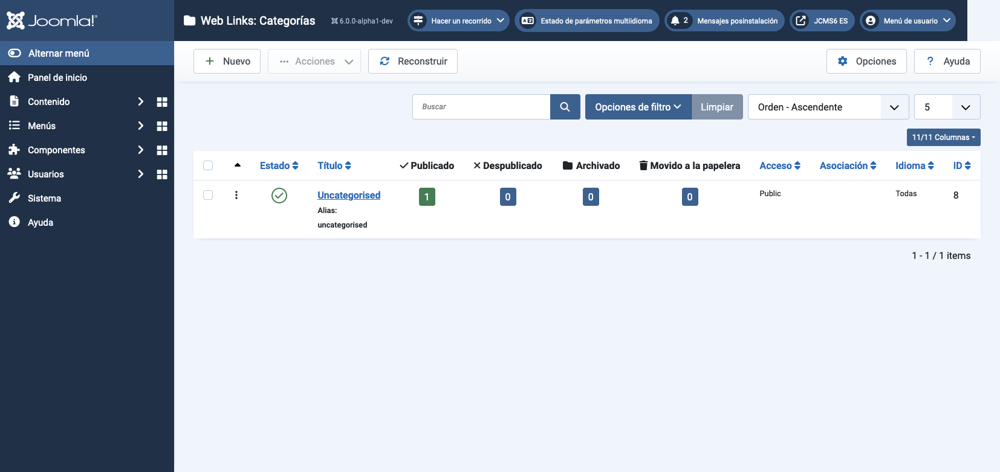

Joomla Help Screens
Liens Web : Catégories
Descripción
Las Categorías de Enlaces Web son únicamente para el Componente de Enlaces Web. Son separadas de otras Categorías, tales como las de Artículos, Banners, Fuentes de Noticias y Contactos.
Elementos Comunes
Algunos elementos de esta página están cubiertos en artículos de Ayuda separados:
- Barras de Herramientas.
- Filtros de Lista.
- Encabezados de Columnas de Lista.
- Ordenación de Elementos en la Lista.
- Paginación de Lista.
Cómo Acceder
Selecciona Componentes → Weblinks → Categorías desde el menú del Administrador.
Captura de pantalla

Traducido por openai.com